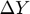
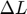
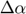
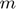
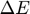
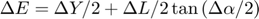

generateMisalignmentForce
generate a 'misalignmentForce.m' file
Contents
Syntax
generateMisalignmentForce(CouplingMisalignment, Mesh)
Description
CouplingMisalignment: is a struct saving the relevant data
Mesh: is a struct saving the information about meshing
generate a misalignmentForce.m file in the root directory
Symbols
: parallel offset
: distance between two shafts
: angle offset
: mass of the coupling
: equivalent misalignment
